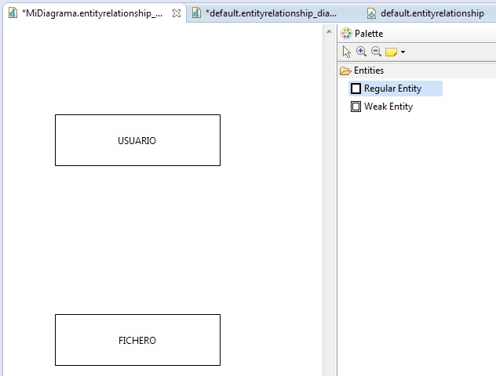
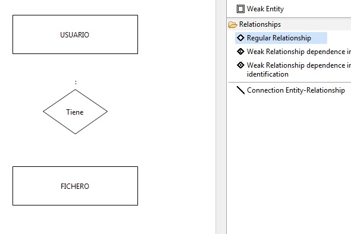
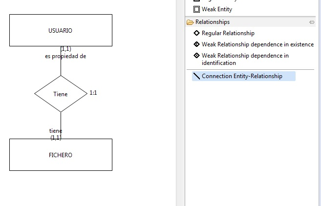
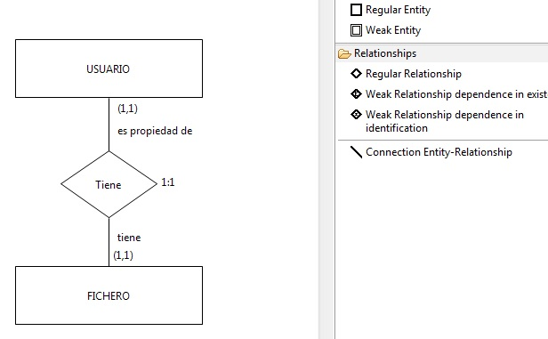
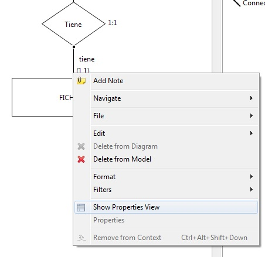
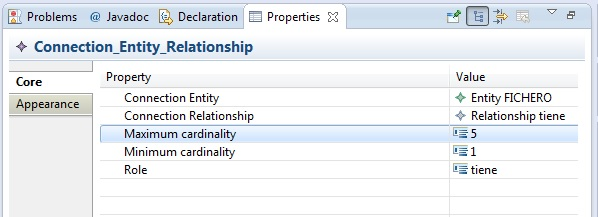
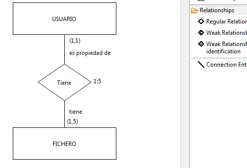
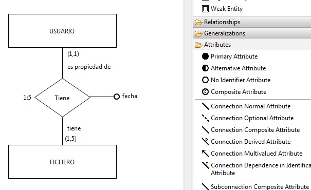

Lo primero que tenemos que hacer es crear las 2 entidades. Para ello nos vamos al menú Palette, desplegamos la pestaña Entities y creamos 2 entidades que en nuestro caso serán Usuario y Fichero.

El siguiente consiste en dibujar el tipo de relación que deseamos crear. Tenemos 3 tipos de relación disponibles que son:

A continuación tenemos que unir las entidades con la relación. Para ello, seleccionamos en el menu Relationships, el elemento Connection Entity-Relationship y trazamos dos conexiones desde la relación hacia las entidades. Nos quedará algo similar a la siguiente imagen:

Para que nos quede un diagrama limpio, lo que debemos hacer es ir formateando los elementos según los vamos creando. En nuestro caso daremos nombre a los roles de la relación y recolocaremos los elementos.

En nuestro ejemplo hemos definido que un Usuario tiene como mucho 5 Ficheros. Para cambiar la cardinalidad de la relación, tendremos que hacer lo siguiente:
Hacemos click derecho sobre la linea de unión entre la relación Tiene y la entidad Fichero. Seleccionamos Show Properties View.
.
Se nos abrirá un visor Properties (que posiblemente aparezca en la parte inferior de Eclipse). En el visor Properties que nos aparece, cambiamos el valor de la propiedad Maximum Cardinality a valor 5. Nos debería quedar algo similar a lo siguiente:

Veremos como de forma automática se cambia la cardinalidad de la relación de 1:1 a 1:5, como aparece en la siguiente imagen:

La creación de atributos es igual que la creación de atributos para entidades. Por ejemplo, podemos añadir la fecha en la que el fichero se asocio al usuario, como se puede ver en la siguiente imagen:
